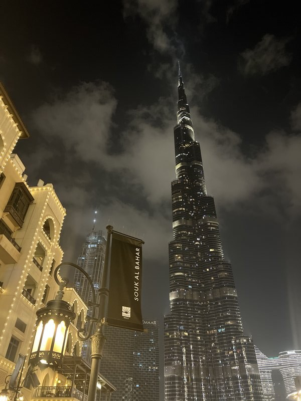
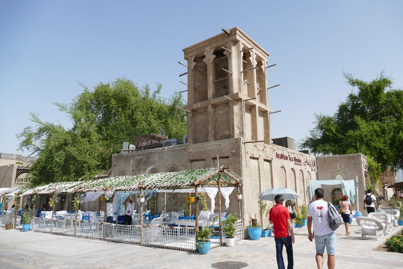

TRIP OVERVIEW
Day 1 – Dubai Frame · Museum of the Future · Burj Khalifa · The Dubai Fountain
Day 2 – The View at The Palm · Al Fahidi Historical Neighbourhood · Dubai Creek
Day 1
🏨 From Hotel: 🚶 38 min · 🚕 10 min → Dubai Frame
1. Dubai Frame
↳ A 150-metre golden rectangle straddling Zabeel Park, framing the towers of new Dubai on one side and the low rooftops of the old city on the other. A glass-floored skywalk runs across the top between the two legs.
🏛️ Daily 9:00am - 9:00pm
⏰ ~1 hr

🚶 30 min · 🚕 9 min → Museum of the Future
2. Museum of the Future
↳ A torus of polished steel wrapped in Arabic calligraphy, hollow at the centre, standing on Sheikh Zayed Road. Inside, themed floors stage an immersive vision of space, ecology, and wellbeing decades from now.
🏛️ Daily 10:00am - 9:30pm
⏰ ~1 hr 30 min

🚶 25 min · 🚕 8 min → Burj Khalifa
3. Burj Khalifa — At the Top
↳ The tallest building on earth at 828 metres. The At the Top decks on levels 124 and 125 open to outdoor terraces with the whole city, the coast, and the desert laid out below.
🏛️ Daily 9:00am - 11:00pm
⏰ ~1 hr 30 min

🚶 5 min · 🚕 3 min → The Dubai Fountain
4. The Dubai Fountain
↳ The world's largest choreographed fountain, set on the 12-hectare Burj Khalifa Lake. Jets shoot water 150 metres into the air in time to music every half hour after dark, with the tower lit behind.

🚶 6 min · 🚕 3 min → hotel
Day 2
🏨 From Hotel: 🚕 25 min → The View at The Palm
1. The View at The Palm
↳ An observation deck on level 52 of the Palm Tower, 240 metres up, with the only public vantage point that takes in the full fronds of Palm Jumeirah spread across the Gulf below.
🏛️ Daily 10:00am - 10:00pm
⏰ ~1 hr

🚕 30 min → Al Fahidi Historical Neighbourhood
2. Al Fahidi Historical Neighbourhood
↳ Dubai's best-preserved historic quarter, a maze of sand-coloured lanes, wind-tower houses, and courtyards built by pearl merchants in the late 1800s. Galleries, cafés, and the Coffee Museum fill the old rooms today.

🚶 6 min · 🚕 4 min → Dubai Creek
3. Dubai Creek
↳ The saltwater inlet that was Dubai before the towers — lined with trading dhows and crossed by wooden abra water-taxis that still ferry passengers between Bur Dubai and Deira for one dirham.

🚕 15 min → hotel
🗓️ Weekly Closures
No notable city-wide weekly closures in Dubai.
📅 Tours
Viator
↳ Afternoon run into the red dunes east of the city: dune-bashing in a 4×4 and a short camel ride, then a Bedouin camp for tea, henna, and a barbecue under the stars.
🕐 3:00pm · ⏳ 6 hr · 👥 Small group
🏨 ↔ 🚐
↳ Red-dune safari with sandboarding and a sunset stop, ending at a desert camp for live shows — tanoura, fire, and belly dance — with an open barbecue buffet.
🕐 3:00pm · ⏳ 6 hr · 👥 Small group
🏨 ↔ 🚐
↳ A smaller-group premium safari — newer 4×4s, seasoned drivers, and a quieter camp with camel rides, falcon photos, and a longer dinner before the drive back.
🕐 3:00pm · ⏳ 6 hr · 👥 Small group
🏨 ↔ 🚐
☕ Cappuccino
Roasters Specialty Coffee House · 4.5⭐ · 450+ reviews
Café Bateel · 4.2⭐ · 800+ reviews
% Arabica — The Dubai Mall · 4.4⭐ · 600+ reviews
Drop Coffee — The Dubai Mall · 4.3⭐ · 300+ reviews
Common Grounds — The Dubai Mall · 4.3⭐ · 1500+ reviews
🫕 Restaurants Near Hotel
Asado — Palace Downtown · 4.5⭐ · 900+ reviews
↳ Argentine grill — wood-fired steaks and empanadas with Burj Khalifa views.
🏛️ Daily 7:00pm - 11:30pm
🚶 7 min · 🚕 4 min
Maison de Curry — Souk Al Bahar · 4.5⭐ · 700+ reviews
↳ Contemporary Indian curry house with a fountain-facing terrace.
🏛️ Daily 12:00pm - 2:00am
🚶 8 min · 🚕 4 min
Karma Kafé — Souk Al Bahar · 4.4⭐ · 1200+ reviews
↳ Pan-Asian dining and dim sum under a giant golden Buddha with fountain views.
🏛️ Daily 12:00pm - 2:00am
🚶 8 min · 🚕 4 min
Mango Tree — Souk Al Bahar · 4.3⭐ · 900+ reviews
↳ Authentic Thai cooking with a terrace over the Burj Khalifa Lake.
🏛️ Daily 12:00pm - 12:00am
🚶 8 min · 🚕 4 min
Eataly — The Dubai Mall · 4.2⭐ · 2000+ reviews
↳ Italian market-restaurant — fresh pasta, pizza, and a deli counter.
🏛️ Daily 10:00am - 12:00am
🚶 10 min · 🚕 5 min
🍽️ Downtown Restaurants
Arabian Tea House · 5.0⭐ · 77+ reviews
↳ Emirati breakfasts and mezze in a courtyard of white wicker chairs.
🏛️ Daily 7:00am - 11:00pm
Al Ustad Special Kabab · 4.1⭐ · 1500+ reviews
↳ Cult Iranian kebab house grilling skewers since 1978 under walls of old photos.
🏛️ Daily 12:00pm - 4:00pm · 6:30pm - 1:00am
XVA Café · 4.3⭐ · 400+ reviews
↳ Vegetarian Middle Eastern plates in a wind-tower courtyard art hotel.
🏛️ Daily 8:00am - 7:00pm
Local House Restaurant · 4.2⭐ · 500+ reviews
↳ Emirati home cooking and the original camel burger in old Bastakiya.
🏛️ Daily 9:00am - 9:00pm
Aroos Damascus · 4.3⭐ · 5000+ reviews
↳ Long-running Syrian institution — grills, mezze, and fresh bread all day.
🏛️ Daily 7:00am - 2:00am
🍮 Local Tastes
Luqaimat
↳ Deep-fried dough dumplings, crisp outside and soft within, drizzled with date syrup and sesame — the classic Emirati sweet, everywhere during Ramadan.
Karak Chai
↳ Strong black tea boiled thick with evaporated milk, sugar, and cardamom. The everyday Emirati cup, pulled at roadside cafeterias for a dirham or two.
Machboos
↳ The UAE's signature one-pot dish: spiced basmati cooked with meat or fish, dried lime, and a blend of bezar spices, finished with caramelised onions.
Camel Milk Chocolate
↳ Dubai-made chocolate built on camel milk — smoother and less sweet than dairy, often spiced with dates, saffron, or Arabic coffee.
📍 Al Nassma · The Majlis
🎭 Shows, Performances & Concerts
Dubai Opera
↳ A 2,000-seat dhow-shaped opera house in the shadow of the Burj Khalifa, staging opera, ballet, musicals, and headline concerts.
🚶 9 min · 🚕 5 min
🚆 Train Stations Near Hotel
🚊 Burj Khalifa / Dubai Mall Metro
⛲️ Day Trips by Train
No day trips from Dubai.
⭐ Michelin Restaurants
⭐⭐⭐ Trèsind Studio
↳ Avant-garde Indian tasting menu — the world's only three-star Indian table.
🚕 25 min
⭐⭐⭐ FZN by Björn Frantzen
↳ Nordic-rooted fine-dining tasting menu — the UAE's first three-star.
🚕 30 min
⭐⭐ Il Ristorante — Niko Romito
↳ Pared-back ingredient-led Italian from the Abruzzo three-star chef.
🚕 20 min
⭐⭐ Row on 45
⭐⭐ STAY by Yannick Alléno
↳ French haute cuisine and the famous all-pastry dessert library.
🚕 30 min
Not shown: 0 ⭐⭐⭐ · 0 ⭐⭐ · 14 ⭐ more in Dubai
🪟 Old City, New City
This whole trip is a study in the same view from two sides. Day 1 climbs the tallest things people have ever built — a steel torus, an 828-metre spire, a golden picture frame — and Day 2 drops down to a creek where wooden boats still cross for a single dirham. The Dubai Frame, sitting almost exactly between the two days, was designed to make the point literally: stand inside it and old Dubai fills one pane of glass while the skyline fills the other.
The abra is the detail I'd hold onto. In a city that sells the biggest and the newest of everything, the cheapest, oldest thing on the itinerary — a one-dirham boat ride that predates all the towers — is also the one most locals will tell you not to miss.